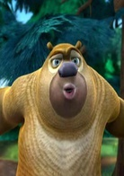
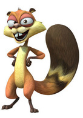
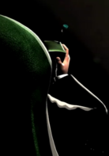
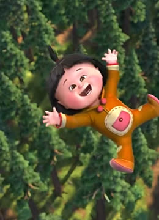
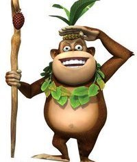
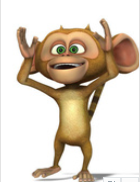

角色介绍






光头强 | ---配音：谭笑
聪明无比，但经常聪明反被聪明误。多才多艺，会跳舞、游泳、钓鱼、唱歌等。其实他一点也不计较狗熊们去他家吃喝玩乐，他如果真的计较，熊们就不可能这么快活了，由于剧情需要，他每次都要失败，和灰太狼一样，是个聪明无比，多才多艺但经常由于剧情需要而失败的家伙，并且患有花粉症，后来未知治好了还是没有。
熊二 | ---配音： 张秉君
一头憨厚可爱、力大无穷、比较聪明却好吃懒做的雄性狗熊，小动物们落难，熊二都会挺身而出，运用智慧打败光头强。
熊大 | ---配音： 张伟
一头聪颖、智慧无边的雄性狗熊，懂得坚持主见的重要性，足智多谋，喜欢母熊翠花，常常为了讨好翠花与胞弟熊二互相竞争；在讨好翠花这一方面，熊大略逊于熊二。
松鼠（蹦蹦） | ---配音： 辛媛
胆小，擅长装死。
李老板 | ---配音： 张伟
《熊出没》系列配角，非常抠门，出现几率很小，经常打电话催光头强交木头，每回给光头强买药和发明都从光头强的工资里扣。
嘟嘟 | ---配音： 张芷潆
嘟嘟是一个孤儿，后来被M集团老板的手下大马猴和二狗绑架，装在箱子里，运送过程发生车祸不小心和光头强的箱子弄混了，被光头强带回家，后来再被熊大、熊二发现。大家与那些坏人一起斗争，发生了许多搞笑的故事。
吉吉 | ---配音： 陈光
熊大熊二的朋友，一只非常自傲的猴子，自称吉吉国王，认为森林里所有的动物都应该听它的，后来因为被熊大熊二教训而收敛了许多，但是偶尔还是很自傲，成为了熊大熊二的好朋友。
毛毛 | ---配音： 孙尧东
一只很可爱的小猴子，但是有时候会犯糊涂。自称吉吉国王的跟班，觉得国王是无所不能的，但是经常被光头强欺负，对吉吉国王非常的效忠。